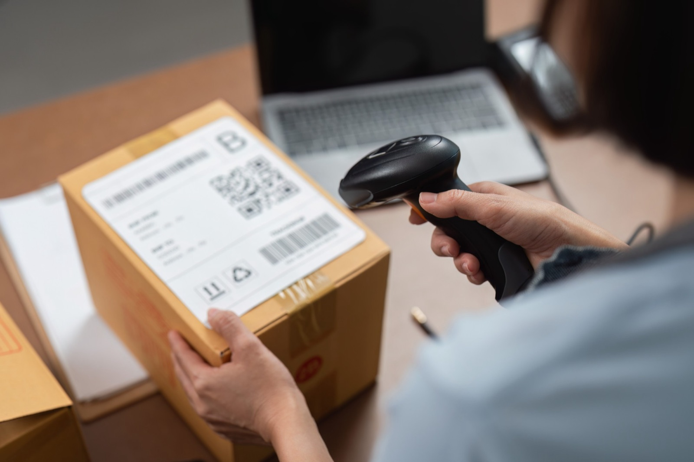

Name one process
Pick a single process from the list above. We scope the systems it touches, the teams who run it, and the metric that defines it today.
Real-Time Execution. Autonomous Operations. End-to-End Visibility.
Travel and logistics networks generate signals constantly across vehicles, warehouses, ports, bookings, inventory, weather and customers. Yet decisions still move through fragmented systems and manual handoffs.
AI changes that. Networks can increasingly sense disruption, evaluate options and coordinate the next best action in real time.
The opportunity is not simply better visibility. It is turning visibility into execution.
A shipment may cross dozens of systems, partners and decisions. Intelligence only creates value when those pieces can respond together.
Combine live telemetry, shipment events, demand signals, weather, inventory and operational data to understand what is happening across the network.
Interpret delays, capacity constraints, documentation gaps and exceptions in context rather than treating every alert as an isolated event.
Evaluate routes, carriers, capacity, service commitments and cost together to determine the best available response.
Turn decisions into execution by updating routes, processing documents, coordinating partners and resolving routine exceptions automatically.
Use operational outcomes to continuously improve planning, predictions and future decisions across the network.
In transportation and logistics, operational friction becomes financial friction almost immediately.
A truck waiting at a dock, a container held at port or an aircraft sitting on the ground is capacity that cannot generate value.
Poor coordination between demand, routes, loads and available assets drives unnecessary movement and leaves capacity underutilized.
Delays, damaged cargo, missing documents and failed deliveries trigger manual interventions across operations, customer service and finance.
Incomplete paperwork, classification errors and disconnected trade processes increase dwell time and expose operators to penalties and compliance risk.
When disruptions are detected too late or resolved too slowly, operational inefficiency reaches the customer through missed commitments, poor visibility and inconsistent service.
Email automation, OCR to agentic AI and humans in the loop: from inbox overload to triggered action.
Manual keying of unstructured delivery and waybill addresses created massive bottlenecks and high error rates in route planning.
Deployed an automated vision and extraction engine tuned for high-volume address parsing.
Digitized processing of more than 500,000 addresses per day with 80% accuracy, dramatically cutting manual effort and unlocking a potential 70% cost saving.

Rebuilds freight intake, customs filing, invoice auditing, and exception management workflows, replacing rigid legacy TMS tooling at the process layer.
Redesigns dispatcher, broker, and customer service roles around agentic tools, evaluating ROI by completed freight movements rather than system logins.
Embeds deterministic validation guardrails and zero-downtime operational failovers ensuring high-concurrency dispatch and routing applications never drop off during peak loads.
Constructs high-throughput data pipelines that ingest real-time IoT telemetry, tracking events, and unstructured trade documents into unified context warehouses.
Outcome Discovery on one named process from the list above. Two to four weeks, fixed price, ending in a baseline metric assessment and a ranked opportunity matrix. Most logistics and transport engagements start with Bill of Lading processing, freight invoice auditing, or tracking exception management due to high manual document volumes and immediate labor savings.
Pick a single process from the list above. We scope the systems it touches, the teams who run it, and the metric that defines it today.
Our engineers sit inside the workflow, trace where time and value leak, and instrument the baseline against your TMS, WMS, and ERP systems of record.
A baseline metric assessment and a ranked opportunity matrix: which interventions move the metric, in what order, and what each is worth.
Bring us a problem. We'll come back inside 24 hours.